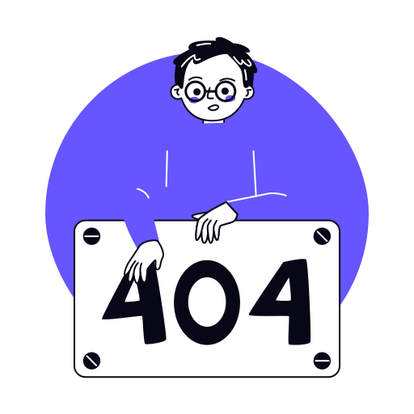

<div class="not-found-page">
    <div class="card flex justify-cente bg-white card-not-found">
        
        <div class="">
            <p-button label="Retour" icon="pi pi-arrow-left" variant="text" severity="info" (onClick)="goBack()" />
        </div>
    </div>
</div>